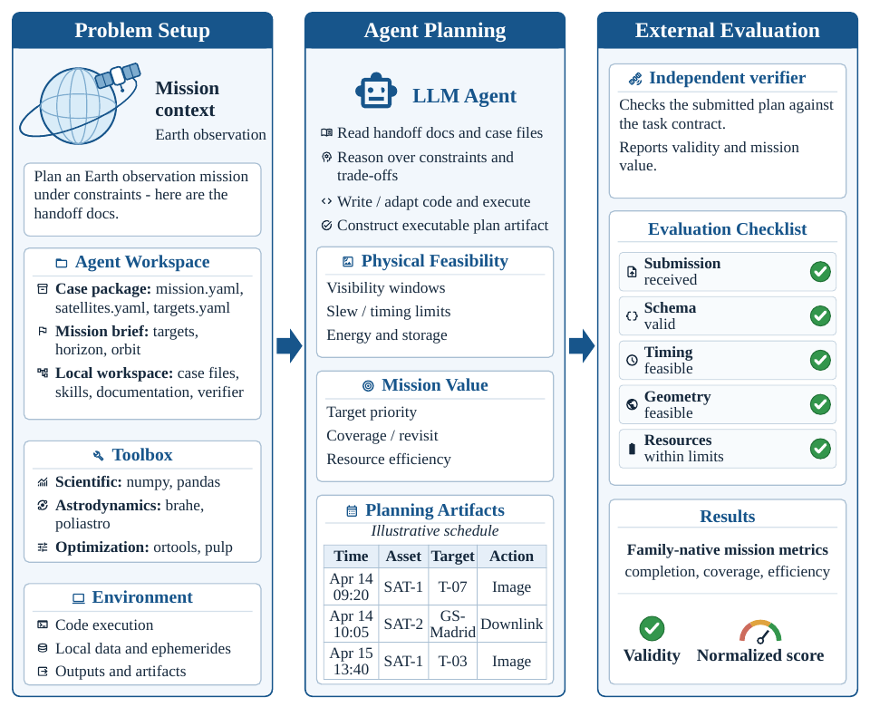
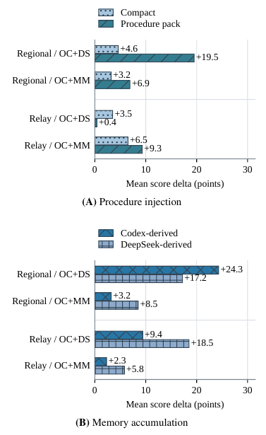

AstroAgentBench: Evaluating Agentic Planning on Space Mission Planning Tasks
这篇最值得借鉴的是把工程规划拆成两层验收：计划是否满足约束，以及计划实际完成了多少有价值的任务。 强 agent 可以在运行中编写求解器，并在部分任务上超过论文选取的专用求解器参考；但合法交付、正确理解任务和高质量优化仍会分离。尤其需要注意，部分失败来自任务说明不充分，部分非零分来自空计划的次要评分项。
1. 背景信息
- 作者与团队：Weiyi Wang 等；复旦大学、上海创智学院及 OpenMOSS 团队。
- 发表：IJCNLP-AACL 2026 长文，pp. 1561–1590。
- 材料：会议论文与元信息、PDF 全文、项目代码。本笔记核对正文、评分定义、主表和关键附录；未运行基准、审计代码或复现 agent 轨迹。
2. 关键问题：合法观测为什么仍然拼不成立体影像？
贯穿案例来自 Stereo Imaging 的真实失败分析。 Agent 收到卫星轨道、目标、可观测时段和任务说明，需要提交原始观测动作。两次拍摄各自合法，只是起点；它们还要满足图像覆盖重叠、会聚角和像素尺度等条件，才能产生有价值的立体产品（§5.1、Appendix C/K）。
Kimi CLI + Kimi K2.6 的某些运行已经读过说明、调用过验证器，却把跨轨指向角写成相反的坐标系符号。观测仍能通过动作层面的硬约束检查，但落在地面轨迹的另一侧，产品重叠接近零。作者在诊断重放中翻转该符号，两例的覆盖率分别从 0.0165 提高到 0.8926、从 0.0071 提高到 0.9716（Appendix K、Fig. 4）。这是事后诊断结果，没有替换主实验分数。
这说明工程规划的困难包括：把文档转成正确的数学对象、让自己的几何实现与验收模型一致、寻找高价值组合，并在截止时间前交付正确文件。任何一层出错，都可能让后面的优化白做。作者也承认任务文档没有充分定义跨轨基向量的手性，因此这个案例同时暴露了agent 对说明的敏感性和基准协议本身的缺口。
3. 关键方法：让 agent 构造求解过程，再由外部验证器验收

图源：论文 Fig. 1，PDF p. 2。从左向右看，工作区给出材料与工具，agent 生成机器可执行的计划，验证器分别检查可行性和任务价值；自然语言解释本身不构成成功交付。
3.1 沿立体成像案例走一遍
- 读取任务约定：确认应提交原始观测动作、时间和指向角；最终产品由验证器计算，不能自创“已完成立体产品”的字段。
- 构造候选与求解器：使用轨道、几何和优化库，计算候选观测、兼容关系及搜索策略。可以调用通用优化工具，但不能把任务直接交给预置的领域规划器。
- 提交候选进行校准：调用工作区中的不透明验证器，检查硬约束错误和任务价值。对这个案例，
valid=true后仍应检查重叠和覆盖；否则坐标系错误会一直藏在合法结果中。 - 围绕瓶颈改进：修复几何实现后，再做产品组合和调度搜索。作者观察到的高分运行常会改变搜索策略，例如只搜索尚未服务的需求，而非重复全局扫描。
- 保留已验证方案并交付：把当前最好方案写入规定的
solution.json，新方案验证后才替换。超时后评分器只看收集到的最终文件，搜索过程中曾找到好方案不算交付成功。
这是评测流程和成功轨迹的归纳，不是论文训练出的新规划模型。模型、CLI 框架、工具、记忆和反馈通道共同构成被测系统；不能从系统排名直接得出裸模型的规划能力排名（§3.5、Appendix E）。
3.2 可行性与价值使用不同判据
用原文 Appendix C 的记号，实例为 $I$、方案为 $S$、任务族为 $f$：
$V_f$ 检查格式、时序、几何和资源约束；$N_f$ 把任务原生指标映射到分数。例如立体成像看产品质量，通信调度看未满足需求，星座设计还考虑重访间隔或服务质量。这里的 normalized score 不是成功率，也不是相对最优解的百分比。
该设计有一个具体缺口：Regional Coverage 将覆盖率与动作数量、电池余量加权相加。Claude 的五个案例被官方解析成零动作、零覆盖，平均分却仍有 21.22，来自少动作和剩余电量项（Tables 3/15、Appendix I/K）。所以读取主榜时还要回到原生任务指标；“合法且非零分”仍不足以说明完成了有效工作。
4. 数据与设置：控制执行条件，保留系统差异
七类任务覆盖观测调度、天线通信调度、相机模式选择、立体成像、区域覆盖、重访星座设计和中继星座设计。五类新生成任务使用公开轨道快照、地理对象与代表性设备参数，再经过物理可行性筛选；SatNet 和 SPOT-5 来自已有规划基准。因此“物理约束可检查”成立，真实航天任务部署效果尚未验证（§3、Appendix B）。
全套 116 个案例中，主实验使用每类 5 例，共 35 例。五套 agent 系统在每个案例上各运行一次，合计 175 次；每次有 2 小时、8 个 CPU 核和 32 GB 内存，使用相同案例和工具环境，不做人为修复。专用求解器参考包含本地实现、文献报告值与存档解；主表的“best solver”逐案例选择最好参考后取平均，并非一套统一算法，更不是经证明的全局最优解（§4、Appendix D/E）。
划分需要单独审计。 Table 8 明确写出 SPOT-5 的训练/测试清单有两例重叠。记忆实验又声明笔记不来自测试案例，并冻结供体在 12 个训练案例上积累的笔记。这两点要求进一步核对实际供体案例 ID：仅凭正文不能认定记忆已泄漏，也不能把整套基准笼统描述为严格无交叠的训练—测试评测。主实验本身未用这些案例训练模型权重。
5. 关键证据：从“交得出”到“有价值”，再到“支持材料是否有用”
5.1 全部合法的系统，仍可能在产品质量上失败
以下摘录 Table 3 中最能说明问题的三类分数；均为五案例平均，缺失或不合法提交计零。
| 被测系统 | 合法提交 | 区域覆盖 | 中继星座 | 立体成像 |
|---|---|---|---|---|
| Claude Code + Claude Opus 4.6 | 26/35 | 21.22 | 12.25 | 19.16 |
| Codex CLI + GPT-5.4 | 35/35 | 72.08 | 64.91 | 68.91 |
| Kimi CLI + Kimi K2.6 | 35/35 | 73.15 | 57.77 | 0.25 |
| OpenCode + MiniMax M2.7 | 23/35 | 17.73 | 0.00 | 0.00 |
| OpenCode + DeepSeek V4 Pro | 34/35 | 35.79 | 35.67 | 13.00 |
| 逐案例最佳求解器参考 | — | 86.44 | 61.79 | 96.05 |
Codex 在中继任务上超过这组求解器参考，但区域覆盖和立体成像仍有明显缺口；Kimi 全部交付合法方案，却在立体成像几乎没有产品价值。这个对照支持分层评分的必要性，也与前面的坐标系案例吻合。
证据规模很小。Appendix G 的 95% 区间来自五个案例的 bootstrap，固定每个系统—案例已有的那一次运行。例如 Codex 的立体成像均分区间为 [33.64, 93.67]；它描述案例重采样变化，未估计 agent 重复运行的随机性，也不是系统间差异的显著性检验。
5.2 外部反馈能校准实现，但调用次数不能替代正确使用
§5 将失败分为任务约定理解错误和求解构造失败。前者包括自创 schema 或目标，后者包括搜索弱、代码脆弱、忽略验证器冲突、改坏已验证结果。Appendix L 统计到 22/175 次不合法交付、16/175 次合法零分交付；两者是结果类型，不能全部算成模型幻觉。
验证器调用与高分有相容的轨迹证据，但没有干净的“去掉验证器”随机对照。Table 4 中，DeepSeek 在 Stereo 上平均调用 47.2 次，Codex 只调用 8.8 次，前者分数仍明显更低。真正需要解释的是反馈是否改变了错误假设和搜索方向；调用量本身不能证明校准有效。
5.3 流程指南和记忆帮助的是特定瓶颈，更多内容未必更好
作者在同一 OpenCode 框架下，对 DeepSeek 和 MiniMax 做两类工作区支持实验：人工编写的简短操作流程/完整流程指南包（文本指导），以及供体 agent 在训练案例上提炼的冻结记忆。记忆快照包含六类任务的笔记，测试期间不再累积，因而该实验也不能单独区分同类迁移与跨类迁移（§5.3、Appendix I.2）。

图源：论文 Fig. 3，PDF p. 8。图中是相对各自基线的分数增量。关注 DeepSeek 的两组任务：完整流程包对区域覆盖帮助更大，在中继任务却弱于简短流程；记忆供体的优劣也随任务改变。
原生指标给出更清楚的解释（Tables 16–17）：
- 区域覆盖：DeepSeek 的加权覆盖率从 0.397 提高到完整流程包下的 0.644；Codex 记忆和自身记忆分别达到 0.725、0.646。候选条带、边际覆盖和保留最优方案的经验可以迁移。
- 中继服务：同一系统从 0.559 提高到简短流程下的 0.658，完整流程包只有 0.601；Codex 记忆为 0.681，自身记忆为 0.833。星位、链路、容量和时序必须同时配合，扩展搜索范围会增加协调负担。
- 反例：MiniMax 在中继任务使用 DeepSeek 记忆后，五例中两例变为不合法。总体收益并不意味着每例更可靠。
因此，证据支持“匹配当前瓶颈的支持材料有用”，尚不足以建立某种记忆机制或更长的流程指南普遍优越的结论。
6. Insights
先测任务约定是否充分，再解释模型能力。 跨轨符号修正能挽回大量覆盖，说明一条坐标定义就可能改变榜单。若继续研究，我会固定模型和搜索预算，只改变“原说明/补全手性定义/给一条已验证几何样例”，比较产品质量与首次校准成功时间。这样才能分清读不懂、说明缺失和搜索不足。
工程评分应把有效服务作为效率奖励的前提。 区域覆盖空计划仍得分，与中继任务“完成服务后再奖励延迟和卫星数量”的门控设计形成直接对照。我会至少同时公布主任务完成度，并检验在覆盖门槛前取消效率奖励是否改变系统排序；这是由评分规则推出的改进建议，论文未做该消融。
经验应保存适用条件和验证结果。 同一中继经验既能救活零服务案例，也会让另一例退步（Appendix K）。可迁移记忆更适合记录候选方案、曾遇到的约束、失败条件和验证判据；部署时仍用当前实例检验。仅保存“上次用了哪套星座”容易把有用先验变成错误约束。
7. 连接与发现
- MOC-LLM-Agent-Evaluation-and-Debugging — 将 agent 调试推进到物理约束可检查的计划，区分任务约定、实现校准、搜索和最终文件交付。